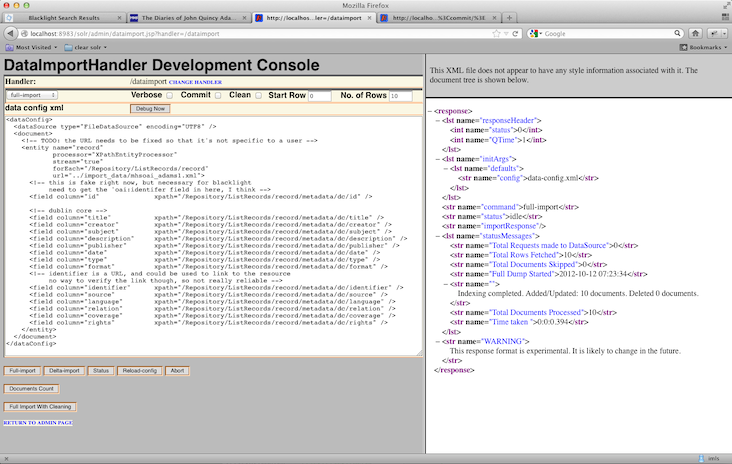

This document will explain the steps to load data into the IMLS Solr index. Solr configuration is a complex topic and the details are outside the scope of this document. A list of references is included to help research any issues that may arise.
The current reference XML file was provided by the Massachusetts Historical Society and was used to create the configuration files for importing data into Solr. One important point to make is that we are currently inserting a field <dc:id>0000</dc:id> which is not provided by the partner. This field is needed for the following reasons:
The current XML file is made up of 21 records which represent objects in the Massachusetts Historical Society's archive.
Example of a current working record:
# from file: imls/import_data/mhsoai_adams1.xml
<oai:record>
<oai:header>
<oai:identifier>oai:an.oa.org:zxa101</oai:identifier>
<oai:datestamp>2012-04-30</oai:datestamp>
</oai:header>
<oai:metadata>
<oai_dc:dc xmlns:oai_dc="http://www.openarchives.org/OAI/2.0/oai_dc/" xmlns:dc="http://purl.org/dc/elements/1. 1/" xmlns:xsi="http://www.w3.org/2001/XMLSchema-instance" xsi:schemaLocation="http://www.openarchives.org/OAI/2 .0/oai_dc/ http://www.openarchives.org/OAI/2.0/oai_dc.xsd">
<dc:id>0001</dc:id>
<dc:title> John Adams, [portrait] </dc:title>
<dc:creator> Benjamin Blyth</dc:creator>
<dc:subject> Adams, John, 1735-1826 --Portraits </dc:subject>
<dc:subject> Men --Portraits.</dc:subject>
<dc:subject> Companion portraits --Adams </dc:subject>
<dc:subject> Portraits </dc:subject>
<dc:description> 1 painting : pastel on paper ; 57 x 44.5 cm. in frame 68 x 55.2 x 4.2 cm. Head and shoulders view, turned slightly right. Full gray wig, narrow turned-down collar on shirt, white stock, dark gray waistcoat and coat, both with large buttons.</dc:description>
<dc:publisher>Massachusetts Historical Society, www.masshist.org </dc:publisher>
<dc:date>circa 1766 </dc:date>
<dc:type>Image </dc:type>
<dc:format> image/jpeg </dc:format>
<dc:identifier>http://www.masshist.org/database/40 </dc:identifier>
<dc:source> </dc:source>
<dc:language> </dc:language>
<dc:relation> </dc:relation>
<dc:coverage> </dc:coverage>
<dc:rights>http://www.masshist.org/legal/rights.cfm</dc:rights>
</oai_dc:dc>
</oai:metadata>
</oai:record>
You'll need to open this file in the editor of your choice, and update the name of the XML file you wish to import. The key line here is url. This gives a pointer to the XML file from which data will be imported. NB: you can update this file name later in the Solr admin interface.
# imls/jetty/solr/conf/data-config.xml
<entity name="record"
processor="XPathEntityProcessor"
stream="true"
forEach="/Repository/ListRecords/record"
url="../import_data/mhsoai_adams1.xml">
To test the import locally, which should be done before moving the XML file out onto a production instance of Solr, it's necessary to drop the new or updated XML file in place. You can then manage the import, either from the Solr Admin interface, or from the command line.
The first step though is to copy the XML file you want to import into the data_import directory under the imls project directory.
Importing From the Solr Admin Interface
Once you have an XML file in place in the data_import directory, and the reference to it in data-config.xml is updated, you can navigate to the Data Import Handler tool in the Solr Admin interface to manage the import.
A good practice for working on the Solr index is to have a browser window open with three tabs: the IMLS Blacklight interface, the Solr Admin Schema Browser and the Data Import Handler interface.
Assuming you are running the import locally first, the URL would be http://localhost:8983/solr/admin/dataimport.jsp?handler=/dataimport. The screen should look like this:

In the left pane is the data-config.xml configuration file, along with controls for running the import. In the right pane is the XML formatted output of the commands.
You may make changes to the configuration (e.g. change the filename of the XML file to be imported) in this interface as necessary. Clicking on Reload-config will reload the original configuration from disk.
The other controls are as follows:
data-config.xml configuration from disk.To perform the import, simply click on Full, Delta or Full Import With Cleaning. Any error messages from this operation may be observed in the terminal where you started Solr.
Once you've performed the import, it's a good idea to use the Schema Browser to inspect the index. With Solr running locally, the URL would be http://localhost:8983/solr/admin/schema.jsp. Clicking on Fields for instance will allow you to drill down into specific fields (e.g. "title") and see the types of data that have been imported into the index. One thing to note is that the data displayed will have been transformed by Solr and so the terms may not look like what you may expect (e.g. history will appear as histori).
Importing From the Command Line
Importing from the CLI, as well as managing updates and clearing the index is easy.
Where to put the XML file on the server.
These references should help with any issues you may encounter with importing. The Solr Wiki is the primary reference for the DataImportHandler but it's worth noting that the documentation provided is written by developers and assumes an intimacy with Java, XML, Lucene and Solr.